Trang chủ › Thể loại: Meta & UI
Thể loại: Meta & UI
9 trang
Cài đặt
Màn hình cài đặt gom các chức năng phụ trợ: bật tắt nhạc, đổi ngôn ngữ, mở chính sách riêng tư và điều khoản dịch vụ, gửi phản hồi, khôi phục mua hàng và vào quản lý dữ liệu đám mây.
🔓 Có ở Home.
4 use case · 2 config · 2 ảnh
Khu trưng bày
Khu trưng bày là hệ thống trang trí dài hạn, đóng vai trò mục tiêu ngoài màn chơi.
🔓 Khu 1 là mặc định theo cờ IsDefault. Tham số server IsShowExhibition điều khiển việc hiển thị mục này.
3 use case · 7 config · 5 ảnh
Khung giao diện
Toàn bộ 40 màn hình của game kế thừa từ UIBase và do UIManager quản lý theo ngăn xếp.
🔓 Hạ tầng, luôn hoạt động.
3 use case · 2 config · 3 ảnh
Lưu trữ đám mây
Cloud save đi qua SDK nhà phát hành chứ không dùng dịch vụ Unity.
🔓 Có nút riêng, mở từ cài đặt hoặc hồ sơ.
3 use case · 4 config
Phân phối asset qua YooAsset
Game dùng YooAsset để đóng gói và nạp tài nguyên, nhưng khác với phần lớn game dùng framework này, toàn bộ nội dung được đóng kèm APK chứ không tải từ CDN.
🔓 Hạ tầng, chạy ngay khi khởi động.
3 use case · 4 config · 1 ảnh
Tích hợp SDK nhà phát hành
SDKManager là lớp lớn nhất của game với 174 method, đóng vai trò cầu nối duy nhất giữa phần Unity và SDK ZMYSDK phía Java.
🔓 Hạ tầng, khởi tạo trong Boot qua SDKManager.Init dạng coroutine.
4 use case · 5 config · 1 ảnh
Âm thanh
AudioManager là singleton nạp âm thanh theo đường dẫn từ bundle, thư mục gốc là Assets/AssetRes/Audio.
🔓 Luôn hoạt động. Bật tắt nhạc lưu ở khoá MUSIC_KEY.
3 use case · 4 config · 1 ảnh
Đa ngôn ngữ
Game hỗ trợ 14 ngôn ngữ trong một bảng phẳng 698 khoá.
🔓 Luôn hoạt động, ngôn ngữ chọn theo máy và lưu trong PlayerPrefs.
3 use case · 4 config · 1 ảnh

Đồ giám cá
Đồ giám là bộ sưu tập 418 loài cá, mỗi loài gắn với một màn cụ thể và một bậc phẩm chất từ 1 tới 5.
🔓 Có nút riêng ở Home. Mỗi loài mở khi người chơi gặp ở màn tương ứng.
3 use case · 3 config · 2 ảnh